demo

In a nutshell:

Work-in-progress architecture as-built Sep 2021.
Unless or until stated otherwise, all data used in demonstrations, screenshots, etc. is for demonstration purposes only and does not belong to actual personal accounts. Such demo data is either our own or has been provided solely for test purposes by the Account Information Service Providers (AISPs) with which we integrate. Under no circumstances shall actual consumer data from any jurisdiction be used without executing the proper legal procedures from said jurisdiction.